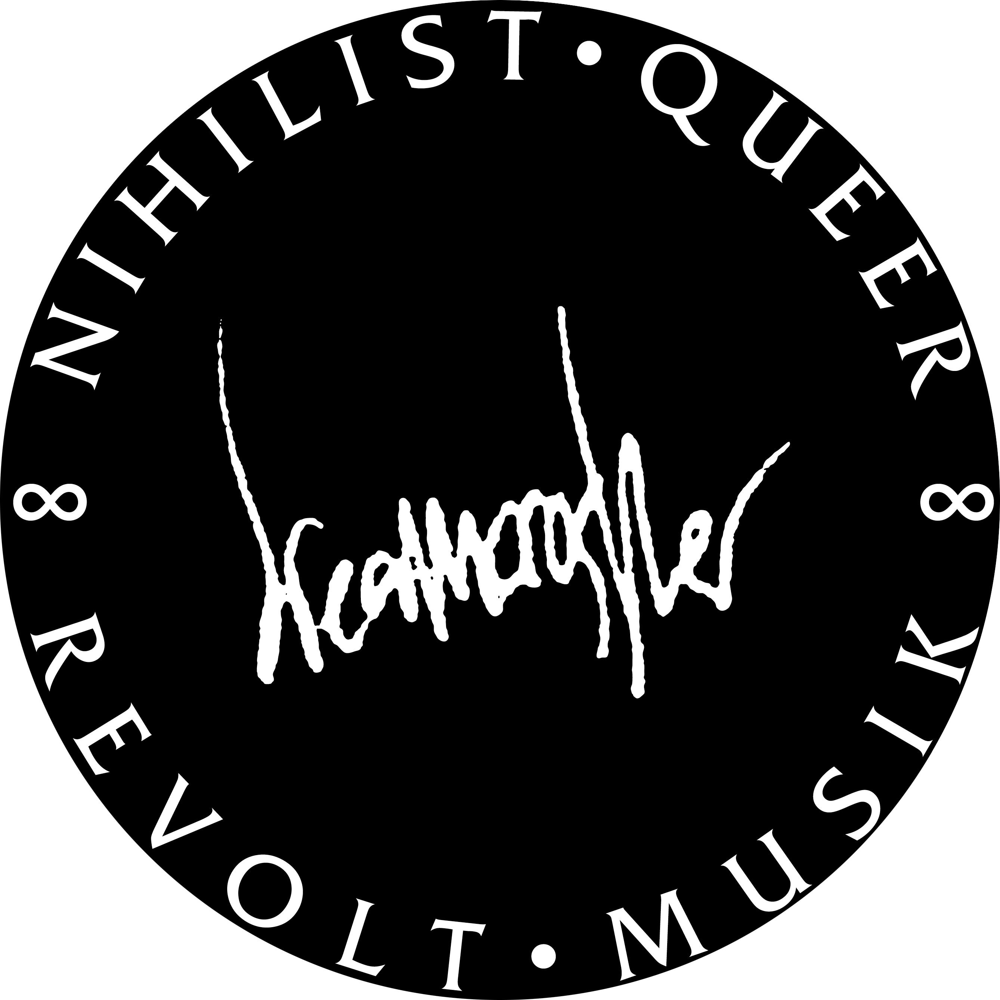

Losing Yourself in Order to Find Yourself
Dreamcrusher

Wichita, Kansas-born artist Luwayne Glass is known for
the ecstatic, mind-melding blend of punk, soul, and
power electronics they make as Dreamcrusher. Glass
started releasing what they call their NIHILIST QUEER
REVOLT MUSIK over a decade ago, and after moving to
New York City in 2015 made a name for themselves as
one of the city’s hardest working noise musicians.
FROM A CONVERSATION WITH LEAH MANDEL JULY 23, 2019
“How are the noise and punk scenes different now, versus when you got to New York?”
“I think it has a lot to do with the financial situation of the city now. If you aren’t working for a major start-up, then you can’t afford to live here. Unless you’re like me and sleep two hours a night, and work all the time, and play four fucking times a week.”
“I want to go back to your live shows. I’m curious how that came together as a concept, as it involves many different senses: sound, light, scent, touch. Was that on purpose?”
“I’m passionate about music and I want that to come across in everything that I do. And when someone comes to my show, I want them to feel like they’re at a Dreamcrusher show. There’s no grey area with that at all.”
stop drinking cold water, or tap water
eat fresh organic fruit
don’t go to shows and just stand there like a dumb start-up male with measles
Reccomendations
Cruel Noise
Blackest Ever Black
Negative Pleasure
The Read Podcast
Sol Sips
Silent Weapons, PTP, Geng, King Vision Ultra
EEL TANK
Yokubari
CORPUS GANG
Diamond Stingily
Braxton Family Values